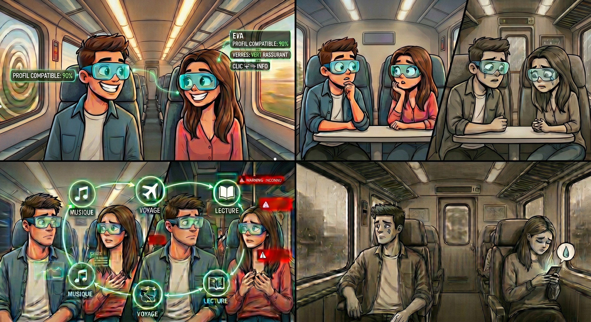
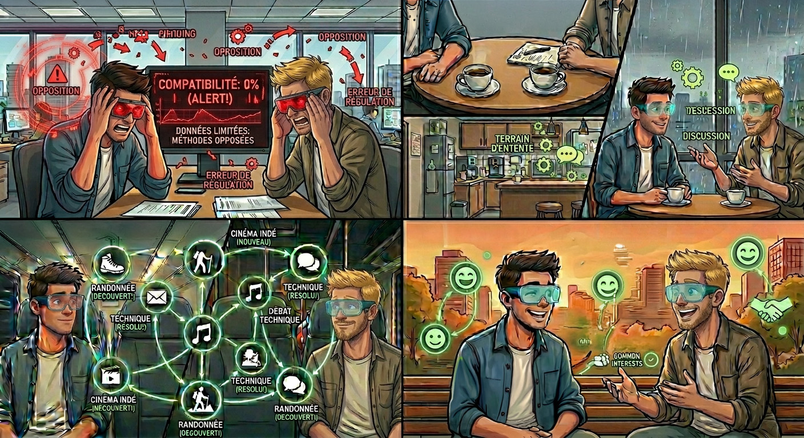

Et si nos lunettes rendaient finalement nos relations superficielles ?
Est ce que des conversation parfait rendait nos relation superficielles ?

Une compatibilité parfaite
L'autre jour, lors de mon trajet habituel en train, mon regard a croisé celui d'une inconnue. Instantanément, mes lunettes « Lunas » ont passé son profil au crible : le verdict tombe, nous sommes compatibles à 90 %. Mes verres se teintent alors d'un vert rassurant.
D'un simple clic sur l'onglet « Profil de la personne », la vie d'Eva n'avait plus de secret pour moi. Porté par ce signal positif, j'ai franchi le pas et j'ai osé l'aborder. Grâce à l'affichage en temps réel de nos points communs, la discussion a démarré avec une fluidité déconcertante, nous donnant l'illusion incroyable de nous connaître depuis déjà dix ans.
Peur de sortir de notre zone de confort
Le lendemain, rebelote. Je retrouve Eva et, en apparence, l'échange reste d'une fluidité exemplaire. Pourtant, une gêne invisible commence à s'installer. J’ai bien tenté de changer de sujet, de sortir des sentiers battus pour explorer l'imprévu, mais nous revenions systématiquement aux points communs suggérés par l’algorithme.
C’était la solution de facilité pour nous deux : une sorte de sécurité sociale artificielle. C'est comme si nous étions devenus incapables de sortir de cette boucle sans fin, prisonniers d'une perfection programmée qui nous empêche d'aller plus loin.
Les conversion parfait ne crée peut-être pas des relation authentique?
Les jours passaient et, chaque matin, je retrouvais Eva dans le train. Mais l'enthousiasme du début a laissé place à un ennui profond : je commençais à m’ennuyer. J'avais cette impression de tourner en rond, prisonnier d'une boucle où les sujets de conversation se répétaient sans cesse.
Nous restions bloqués sur ce que nous aimions tous les deux ; dès que l’on tentait d’aller dans des chemins inconnu, les échanges perdaient tout leur naturel. Malgré les voyants verts et les scores de compatibilité, j’avais l’impression de ne pas la connaître réellement. Notre relation semblait désespérément superficielle, comme s'il manquait ce lien profond et authentique que seul l'imprévu peut create.
Peut-être que nos divergences rendait nos relation humaine ?

Un début chaotique.
Un jour au boulot, je me retrouve à bosser avec Guillaume, une personne avec qui je ne suis pas du tout compatible d'après l'algorithme. Quand je le regarde, mes verres deviennent rouges, mais je n'ai pas le choice : je dois travailler avec lui.
Au début, c’est le blocage total. Je ne sais pas quoi lui dire en dehors des explications techniques sur la tâche que nous devons effectuer. On a même eu beaucoup de mal à se mettre d’accord sur la façon de la réaliser car nos méthodes s'opposaient
Réapprendre à connaitre quelqu’un sans les algorithmes
Les heures passent et j’ai continué de travailler avec Guillaume. Les barrières du début tombaient petit à petit. En discutant avec lui, on finissait par trouver des terrains d’entente sur notre façon de collaborer ; on y allait avec des pincettes, mais à la fin de la journée, nos interactions étaient déjà bien moins tendues qu’au départ.
Plus je passais de journées à bosser avec lui, plus j’apprenais à le connaître. On s’est même découvert des centres d’intérêt en commun. Au fil du temps, il m'apprenait de nouvelles choses que je ne pensais jamais aimer, et vice versa. Finalement, j’ai même commencé à apprécier passer du temps avec lui en dehors du boulot.
La vraie question est “Est ce qu’on peut vraiment se filler pour connaitre la cmopablilté entre deux personnes?”
Au final, en apprenant à connaître Guillaume, nous avons construit une relation basée sur nos différences. Ce sont justement ces quelques divergences qui rendent notre lien authentique.
Si j’avais écouté aveuglément l’algorithme, je serais passé à côté d’une rencontre précieuse. Ce n’est peut-être pas une relation "parfaite" selon les critères de mes verres, mais c’est une relation où l’on apprend l'un de l'autre. J'ai compris que les algorithmes ne pourront jamais remplacer l’imprévisibilité humaine. C’est précisément ce grain de sable, ce risque de l'inconnu, qui rend nos relations véritablement humaines.
Le Celeon